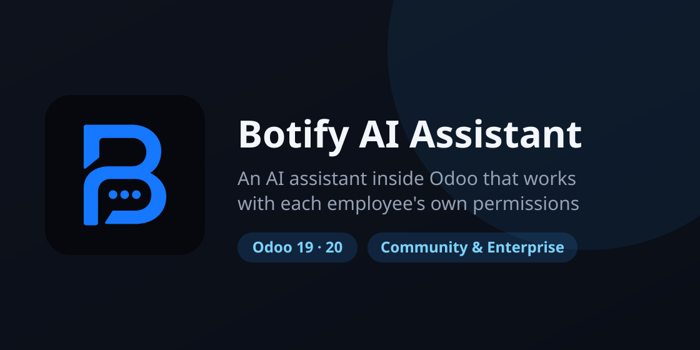

Botify AI Assistant
An AI assistant inside Odoo that answers questions and does the work for each employee,
with that employee's own Odoo permissions.

What it does
- Answers questions about your Odoo data in plain language: sales, CRM, invoices, purchases, inventory, projects, timesheets, time off and more.
- Finds records, counts and sums them, and opens the record you are looking for.
- Creates and updates records, confirms quotations and runs approved business actions when your administrator allows it.
- Tells employees when their time off is approved or refused (when the Time Off app is installed and the administrator turns it on).
- Works in Arabic and English, from a floating chat button in the Odoo backend.
Safe by design
- Each employee's own permissions. Every read and change runs as the signed-in employee, under their Odoo access rights and record rules. The assistant never sees more than the employee can.
- Changes wait for the employee's approval. The assistant shows each change and runs it only after the employee confirms, unless the administrator turns on Allow simple changes without confirmation for low-risk changes (off by default). High-impact changes, deletions, financial operations and messages to external people always need confirmation.
- Read-only until you decide. A fresh install can only read. The administrator turns on each kind of change in Settings.
- Only the people you choose. Only members of the group Botify Agent user see the assistant.
- Hide what is sensitive. Administrators can hide extra models and fields, and protect models from changes.
- Full log in Odoo. Every operation is recorded in Odoo under Settings, Administration, Botify Agent, Operations.
Data sent to Botify
This module connects your Odoo to Botify, an external AI service run by Umbrella Prime
(botifyarabia.ai). Nothing is sent to Botify until an administrator
enters the Botify connection (Botify API URL, installation key and installation secret) in
Settings, Botify Agent, and ticks Botify agent. Until then the module refuses every request and
no chat is loaded. After that, only employees in the group Botify Agent user send data. When Odoo loads for
such an employee, the browser sends who the employee is, the open page and any pending time-off notifications,
even if they never open the chat. Chat messages, the records the assistant reads and the capabilities summary
are sent only when they use the assistant:
- Who the employee is: the Odoo database name, user ID, partner ID, name, language, time zone, current and allowed company IDs and the current company name, signed for a short time with the installation secret.
- Where the employee is: the model, record ID, record name, menu action and view type of the Odoo page that is open, and the companies selected in Odoo.
- What the employee can use: the Odoo apps and menus they can open, the models and fields they can read, and their own employee name, manager and department.
- Chat messages the employee writes to the assistant.
- The records the assistant reads to answer, read with that employee's access only, and the result of each change the employee approves.
- Time-off decisions (leave type, dates, days and who decided), only when the administrator turns on time-off notifications.
The Odoo server itself never connects to Botify: the employee's browser exchanges this data with Botify
through the chat window. The installation secret stays on the Odoo server and is never sent to employees' browsers or to Botify.
No Odoo password or API key is sent. Botify processes the messages and records with an AI model to answer the employee.
Requirements
- Odoo 19 or 20, Community or Enterprise.
- Odoo.sh or on-premise. Odoo Online does not allow custom Python modules, so this module cannot be installed there.
- A Botify workspace with an Odoo connection. Get one at botifyarabia.ai.
- Depends only on the standard base, web, mail and bus modules.
Setup
- In Botify, open your assistant, then Odoo, Connect an Odoo. Enter your Odoo address and database name, then create the secret and copy the Botify API URL, installation key and installation secret.
- Install Botify AI Assistant from Apps.
- In Odoo Settings, Botify Agent, paste the three values, tick Botify agent, and choose which kinds of change to allow.
- Add employees to the group Botify Agent user. They see the Botify button after reloading Odoo.
Support
Email hello@umbrellaprime.sa or visit
botifyarabia.ai. This module is free and licensed under LGPL-3.